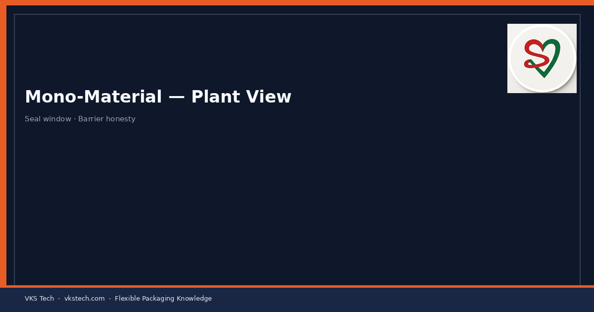
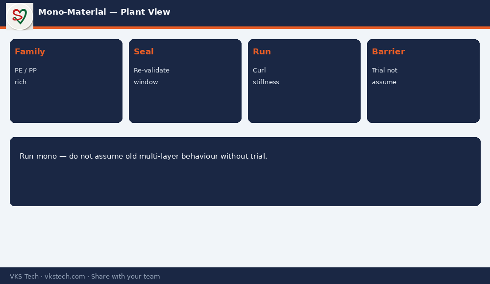

♻️ Mono-Material Is Not Only a Marketing Slide. On the Plant It Changes Seal Windows, Stiffness and Sometimes Barrier Reality.
📖 10-min read · Sustainability · Production + PPC
Brands ask for PE-rich or PP-rich mono structures for recyclability claims. Plants must still print, laminate, slit and pouch them. Seal temperature range, curl, stiffness and real barrier can differ from the old multi-material structures the team is used to.
📌 Plant Checklist
- Confirm structure family (PE-based / PP-based) before copying old recipes
- Re-validate seal window on pouching — do not assume old setpoints
- Watch curl and stiffness on high-speed lines
- Be honest about barrier: mono is not always equal to previous EVOH/foil builds

💡 Honest line: “We can run mono structures. We will not pretend the seal and barrier behaviour are identical to the old multi-layer job without a trial.”
♻️ मोनो-मटेरियल सिर्फ मार्केटिंग स्लाइड नहीं है। प्लांट पर यह सील विंडो, स्टिफनेस और कभी-कभी बैरियर हकीकत बदल देता है।
📖 10-मिनट पढ़ें · सस्टेनेबिलिटी · प्रोडक्शन + PPC
💡 ईमानदार लाइन: “हम मोनो स्ट्रक्चर चला सकते हैं। बिना ट्रायल के पुराने मल्टी-लेयर जैसा व्यवहार मान नहीं सकते।”